← 返回阅读库 · 原论文目录
论文讲解阅读文档 · 新模型 · v066
MobileNet V2 Inverted Residuals and Linear Bottlenecks[1801.04381]
视频时长 00:10:29；讲解文字 4,526 字符；提取讲解画面 25 张。按视频原顺序阅读，每段文字保留时间戳。
文字来自整段视频的自动语音转写，按自然停顿分段，并与 PPT / 论文页面 / 演示画面对齐。未将讲解压缩为摘要；术语、数字和口述公式请结合画面及原论文核对。 阅读稿已校正规范部分明确术语误识别；原始逐字稿和每处修改记录另行保留。
讲解画面为源视频截图（640×360），不是可编辑 PPT 文件。全片按每秒 2 帧扫描内容变化，逐步展开页保留；连续动画保留代表画面。清晰度受源视频限制。
下载完整资料包 · 含离线 HTML、PDF、Word、全部 PPT 画面和字幕。
原论文与材料
MobileNetV2: Inverted Residuals and Linear Bottlenecks · 下载完整 PDF（14 页）
按时间阅读
00:00:00–00:00:17 · 画面 001
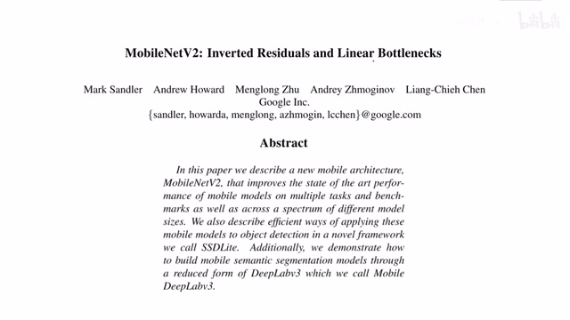
00:00:00–00:00:17 · 画面 001大家好,今天我们来迅速出一篇论文 MobileNetV2 Inverted Residuals and Linear Bottlenecks。那么这篇论文就是在 MobileNet 第一版的基础上做了一点修改。其实它的实现并不复杂，我们重点关注一下它的 intuition，或者说为什么它这样的设计能够管用。那么这个故事其实要从一个非常抽象的概念谈起，它叫做 Manifold。用一个非常不恰当的比喻。
00:00:17–00:02:17 · 画面 002
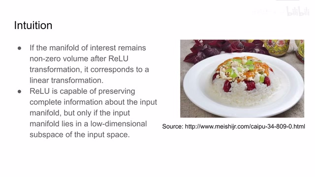
00:00:17–00:02:17 · 画面 002就是你可以想象我们所有的样本在一个很高很高维度的空间，它们呢其实是分布在一个连续的表面上的。那么你从这个表面上开始滑动呢，你就从一个样本跳到一个样本，从我们图像中代表的一个语义呢跳到另一个语义。那比如说我们想做图像分类，其实呢就是想把这个在很高维度的空间中的这么一个表面给它找出来，因为我们图像的语义信息呢，它本身是一个高度抽象的高度概括的。
那么其实你在数据集中出现的这一个复杂的高维的曲面完全可以用一个低维度的曲面去代表它。那么这个时候有朋友就会说了，那我既然本来我的目标就是一个低维度的目标，那我用一个浅浅的网络直接做一下不就行了吗？但事实上并没有这么好的事情，无数的实验证明我们确实还是要到一个很高的维度去操作我们这样的数据集去做不同的变化。尽量保持他们里面每一个样本或者说这个曲面的连接的里面这些关系，这样呢我们就可以很方便的接入我们下游的任务。那我们现在再回忆一下我们的神经网络，它的本质呢是里面一层做 linear transform，然后呢用一个 nonlinear 的激活函数去阻止说两个 linear layer 给它退化成一层 linear layer。那么就这样 linear 和 nonlinear 的层呢不断的这样堆叠起来。
我们呢希望我们的模型能够拟合说任何一种我们想要拟合的函数。那么现在呢我们想要我们这个模型把我们的原来的那个高维的这个曲面给它投影到一个相对低维的我们好做区分的这么一个面上，这么一个空间里面。那么我们当然希望想要尽可能多的保留原始的这个高维的面的信息。那假如说我的这个变化里面它全是 linear transform，那这样的变化呢是很容易能够保留原来的信息的，因为你是 linear 的变化嘛，你正推反推都很方便。但是呢问题就出在我们的网络中呢还有一些 nonlinear 的部分，这些部分呢我们又没法舍去。那么这一部分呢就是我们的激活函数，比如我们最熟悉的 ReLU，它呢就是把输入小于 0 的部分全部截掉了，截成了 0，但是输出的地方呢全部能保留下来。
00:02:17–00:04:14 · 画面 003
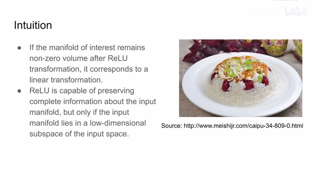
00:02:17–00:04:14 · 画面 003这个呢其实就像你做八宝饭对吧，你先把所有的材料埋到一个碗里，然后弄好之后呢啪给它扣出来，扣到另一个盘子上。说到这就像对吧，你炒红豆绿豆炒到锅里炒炒熟之后往外一倒，红豆绿豆自然分开。哎，这为什么呢？你把这些材料对接的 pattern 呢理解为我们有用的信息，那你希望在扣过来的时候尽量能够保存这个信息。如果我们是一个全是 linear 的变化呢，那这个信息呢哪怕它稍微有一点变形它还是能够很好地保留下来的。但是呢如果对于我们的 relu 来说呢，它就像是你把这个碗扣到了这个盘子的一边，但是呢扣了一半，另一半呢就顺着盘子沿呢就给雕出去了。这个大的盘子里面呢只成了一半的信息，那这个是很不好的事情。
但是呢幸好我们用的是锐路，你留在盘子里这一半的信息呢它是没有经过锐路的变化的，也就是说呢它还是一个线性的变化。那么这个呢是作者给我们的第一个 intuition。那么随后呢作者就想，我们有没有办法即便有了锐路也能够把我们的这个所有的东西都保存下来呢？那方法是有的。也就是说呢，我在这个扣盘子的时候只要这个盘子足够大，我们的信息呢在一个很高维度的曲面里面，在一个很高维度的曲面里面做这个轮路呢，因为我们想要保留的这个信息呢它的维度或者说它的复杂度呢是比较低的，我们在一个高维度的空间里面做轮路呢就可以尽量保留住我们这些低维度的信息，使它也是做一个线性的变化，不要被轮路给咔掉。那么空谈了这么多，我们实际来举个例子看啊。
00:04:14–00:04:23 · 画面 004
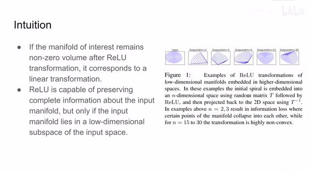
00:04:14–00:04:23 · 画面 004这个螺旋线是我们的一个输入信号，我们首先通过一个变换把它从二维的空间变换到一个很高维的空间，然后再通过这个变换的反变换给它变回到二维空间，然后我们看它的投影。假如说这个高维空间尺度是 2，尺度是 3，我们可以看到它里面的这些 pattern 很大程度的被破坏掉了，这种情况就导致了信息的丢失，这个是我们不愿意看到的。
00:04:23–00:04:27 · 画面 005
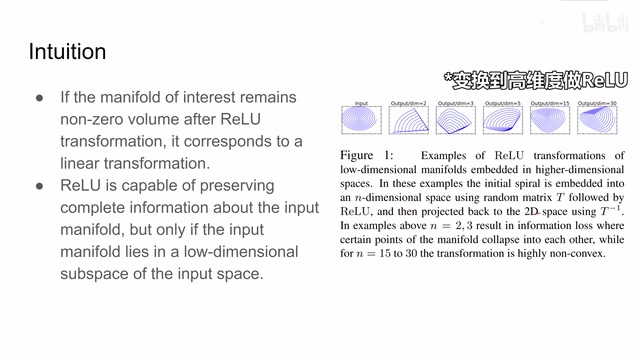
00:04:23–00:04:27 · 画面 00500:04:27–00:04:31 · 画面 006
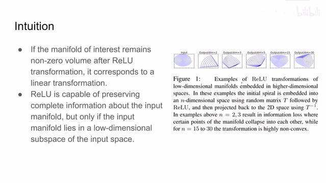
00:04:27–00:04:31 · 画面 00600:04:31–00:04:36 · 画面 007
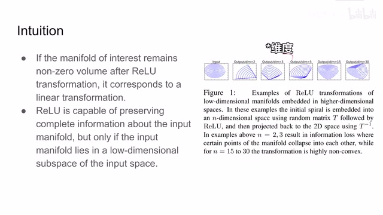
00:04:31–00:04:36 · 画面 00700:04:36–00:05:03 · 画面 008
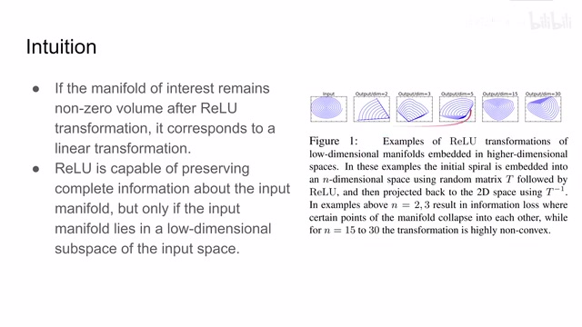
00:04:36–00:05:03 · 画面 008但是呢，如果我们的维度够高，在一个高的维度里面做维度再投影回来，因为我们的输入它的信息本来是低维的信息，这样呢，我们的信息呢就得到一定程度的保留。所以说，结合以上这两点，我们得到一个浅显的结论，就是说我们想把我们的网络做小没问题，但是你在做维度的时候一定要把它放到一个很高的维度，这样呢，我们就来看到本文设计的网络结构。那么左边这里呢，是一个普通的
00:05:03–00:07:03 · 画面 009
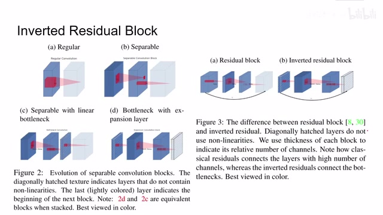
00:05:03–00:07:03 · 画面 009平平无奇的这么一个卷积的操作，它把原来这个 channel 呢逐渐的变深。那么在 mobile network 1 中呢，我们把这样一个普通的 convolution 拆成了两个，一个是 depthwise 的 convolution，它只对每一个 channel 内部的相邻的区域来做这个 convolution，那么另一个呢是 1 乘 1 的 convolution，它呢把每一个 channel 全部串接起来，是这样的一个形式。
那么总体来看也是我们的 channel 的数量是不断的增加的，但是我们考虑之前的 intuition，我们希望我们在做 ReLU 的时候是在一个尽量高维的空间里面做。那么因此看到这个模型在之后的发展中变成了这个样子，你可以看到这一层是打了斜线，意味着这一层后面并没有激活函数，也就是说从这一层到后面这一层它的变化是完全线性的。那么这样一个结构就叫做 Bottleneck convolution。
你可以看到我们最终把一个很高的维度给它缩到了一个较低的维度上，那么在这个较低的维度我们再扩出很高的维度，那么这个低维度就被我们称作 linear bottleneck，因为它是没有 activation function。那么因为这样的层数是一层一层叠起来的，所以假如我们换一个它的起始点的位置，把这一层最薄的这个 bottleneck 放到起始点，那么一样的给它串接起来，那么这样的结构跟左边这个结构是等效的。
我们把这个结构呢称作 expansion convolution block，因为呢我们从这个 bottleneck 出来先是做了一个很大的 expansion，一个扩大，把我们低 channel 的这个 tensor 呢搞到一个高 channel 的 tensor 上，这样循环下去。那么考虑到 residual block 它的发展呢，我们这里呢一样把它的残差的这个思想也代入进来，那么不同于这个传统的 residual block，它们是从这种大的这个 tensor 之间来做这个传递。
本文中呢是直接在这个 bottleneck 这个 channel 数最小的地方来做这个 skip connection，这样呢就使我们的模型更加清亮。那么这样的模块呢就叫 inverted residual block。那么我们具体来看它的实现，可以看到呢在一开始进来，我们是先做了一个 1 by 1 的这个 2D 的 convolutional
00:07:03–00:07:17 · 画面 010
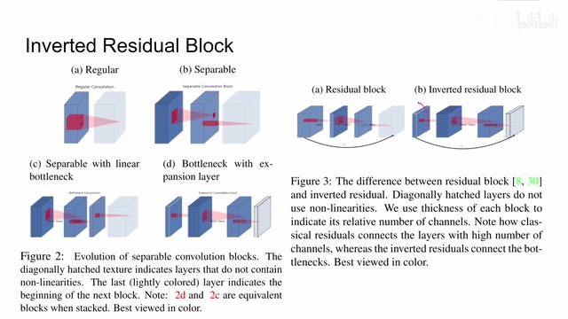
00:07:03–00:07:17 · 画面 01000:07:17–00:08:20 · 画面 011
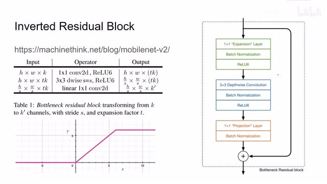
00:07:17–00:08:20 · 画面 011这个它的作用呢是把我们输入进来的 d channel 数量的这么一个 tensor 变到一个高的 channel 数量，你可以看到它是从 k 个 channel 变成了 tk 个 channel，那这里呢它加了一个击破函数叫做 relu6，这个 6 的意思呢就是这个样子，我在这个输入的值大于 6 的时候呢也给它掐成 6。那么在这一程 expansion 之后呢，我们再做 depthwise 的这个 convolution，也就是针对每一个 channel 它们 3x3 的领域呢我们做这个 convolution。
那同样的它的激活函数呢也是这个 ReLU6 它产生的 tensor 呢是一个形容这样的 tensor 那么最后呢我们要把这个 tk 个 channel 呢围成 k prime 这样的一个 channel 从高维到低维呢做一个线性的变换就是一个 1 by 1 的 convolution 其实呢你就可以理解为它是一个 2d 领域的这个 linear projection 那么做了这个变换之后呢结合我们一开始的 intuition 我们这里呢就不能再用任何激活函数了所以说这一层呢它就是一个线性的变换
00:08:20–00:08:21 · 画面 012
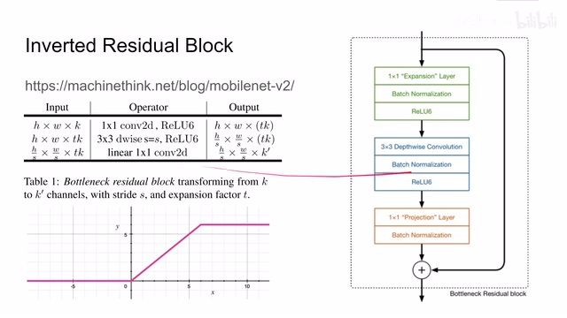
00:08:20–00:08:21 · 画面 012那么可以看到这里先是 expansion 就是把我们的 k 个 channel 变化到 tk 个 channel 左边做 activation 然后再是 depthwise convolution 对应了我们中间这一层最后 projection layer 就是把我们 tk 个 channel 变成 k'个 channel 最后 skip connection 它连接的就是原来的很低维的数据那么把这样的模块复制很多遍这个就是本文提出的模型的结构
00:08:21–00:08:42 · 画面 013
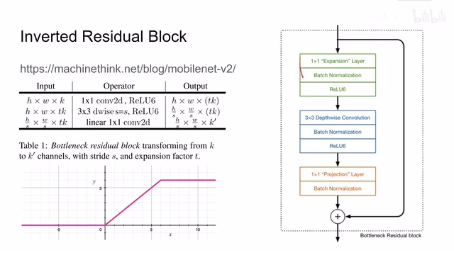
00:08:21–00:08:42 · 画面 01300:08:42–00:08:43 · 画面 014
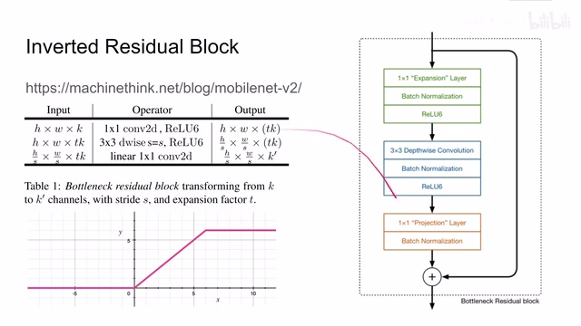
00:08:42–00:08:43 · 画面 01400:08:43–00:08:45 · 画面 015
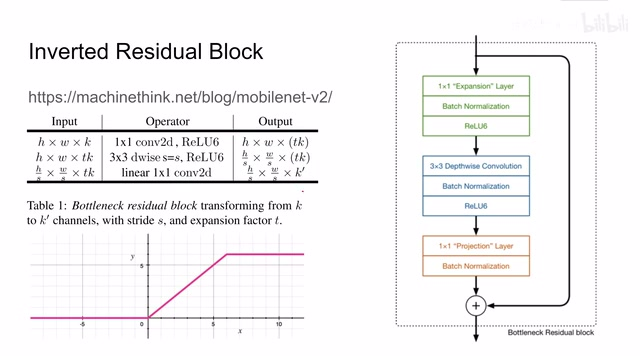
00:08:43–00:08:45 · 画面 01500:08:45–00:08:46 · 画面 016
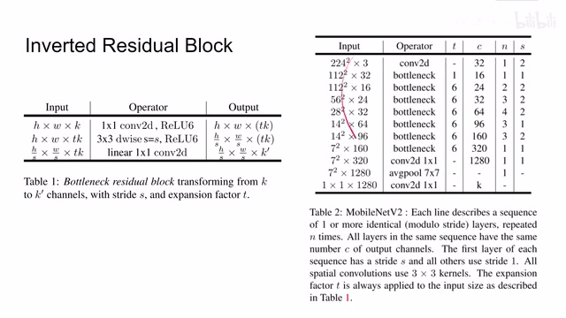
00:08:45–00:08:46 · 画面 01600:08:46–00:08:51 · 画面 017
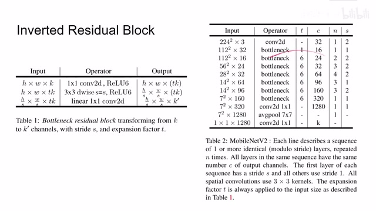
00:08:46–00:08:51 · 画面 017你可以看到它和 MobileNetwork1 的主要的区别呢就是中间的这个 operator 发生了这个 inverted residual block 或者叫 bottleneck residual block 因为你两个 block 之间它的 channel 的深度呢这个 k 是小于这个 tk 的这样呢你就能保证在你做变化的时候每个 block 里面它有足够深的 channel 但是呢你最终呢还是把它输入到了一个 bottleneck k prime 或者是 k 上它呢是一个相对低的维度
00:08:51–00:09:15 · 画面 018
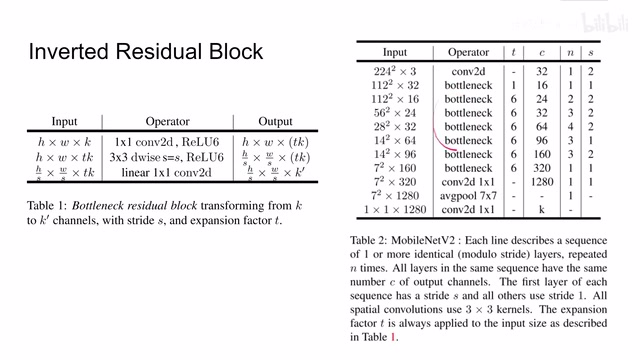
00:08:51–00:09:15 · 画面 018好的那么我们直接来看作者汇报的结果吧作者呢用这个 image 作者呢这里使用这个 mobile net 作为 backbone 像图像分类目标检测 PASCAL VOC 这个语义分割一些美好的数字一些之前这些主打轻量的网络还是很不错的目标检测是使用了 SSD 的框架那么这边呢你可以看到作者使用了不同的配置总的来说呢本方法行之有效性能呢没有退化的很多
00:09:15–00:09:26 · 画面 019
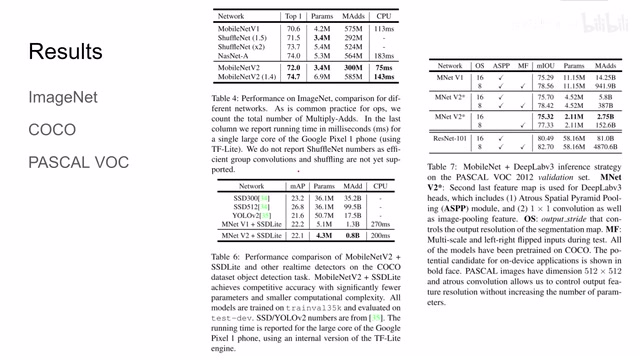
00:09:15–00:09:26 · 画面 01900:09:26–00:09:27 · 画面 020
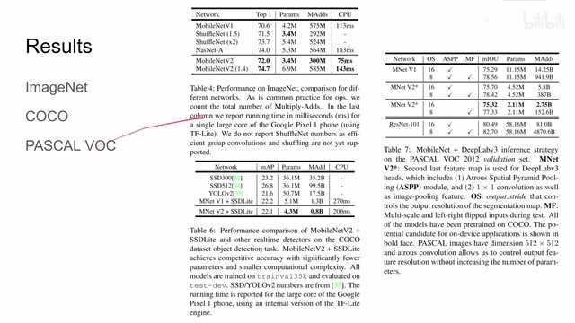
00:09:26–00:09:27 · 画面 02000:09:27–00:09:42 · 画面 021
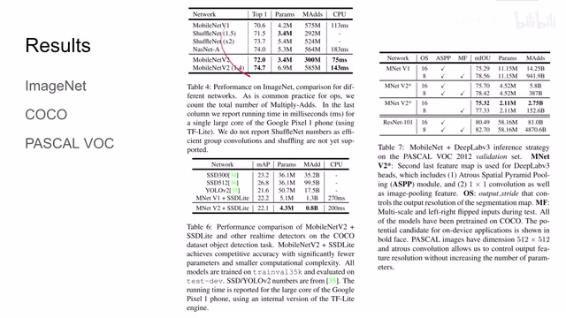
00:09:27–00:09:42 · 画面 02100:09:42–00:09:48 · 画面 022
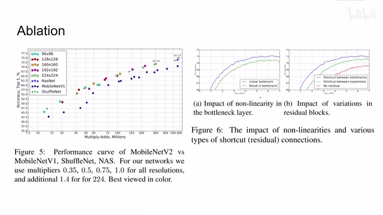
00:09:42–00:09:48 · 画面 022那么这里呢做着还汇报一些 ablation 这里呢是这个操作数和这个准确率它们的吹道这里呢你可以看到不同的网络结构像如果我们使用 linear bottleneck 还有我们最后在做 projection 里面如果加了 relu6 会怎么样可以看到呢它是影响我们的性能的这里呢探讨了我们的 shortcut 也就是 skip connection 怎么连接那么可以看到呢连接 bottlenecks 它的效果呢是最好的
00:09:48–00:09:49 · 画面 023
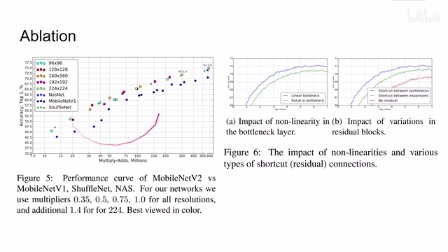
00:09:48–00:09:49 · 画面 02300:09:49–00:10:29 · 画面 024
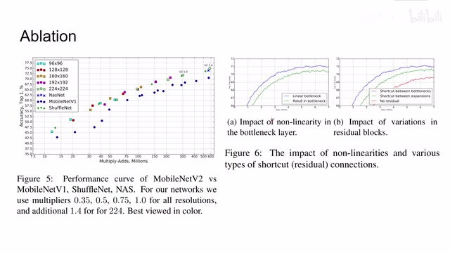
00:09:49–00:10:29 · 画面 024好的那么以上就是我对这篇论文的简单分析还是说这个论文的 intuition 可能会比较抽象但是呢它的实际的网络设计呢却非常简单那么此外呢作者还探讨了因为本文这个网络的设计对于内层上产生了诸多的访问优势那么如果你对这方面感兴趣呢欢迎你去原文查看那么感谢您的收看再见
00:10:29–00:10:29 · 画面 025
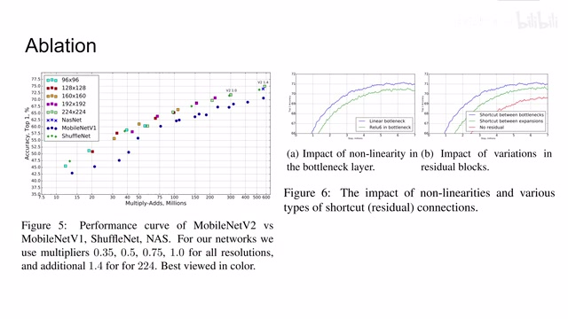
00:10:29–00:10:29 · 画面 025转写与来源说明 · 0 个自动复核提示
保留 24 个原始语音片段，0 个片段触发自动复核提示。提示仅用于定位可能的术语、重复或识别问题，不等于已确认错误。
讲解画面为源视频截图（640×360），不是可编辑 PPT 文件。全片按每秒 2 帧扫描内容变化，逐步展开页保留；连续动画保留代表画面。清晰度受源视频限制。
原视频：paper/合集_2026-10-16_新模型/[论文简析]MobileNet V2 Inverted Residuals and Linear Bottlenecks[1801.04381].mp4
SHA-256：16184497a1dee96d68eec8dfb2a249a92eb7a9f841dcaf17dd6d1ea670426c2d
全文按视频语音与画面制作。原论文可从上方链接下载；完整资料包保留全文、原始逐字稿、字幕和校对记录。